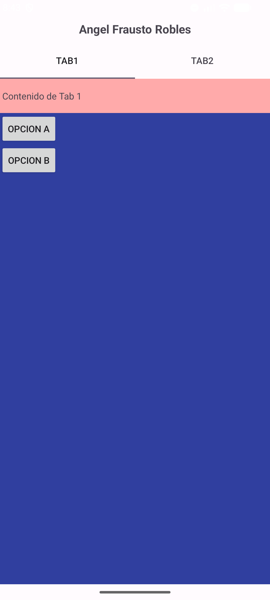
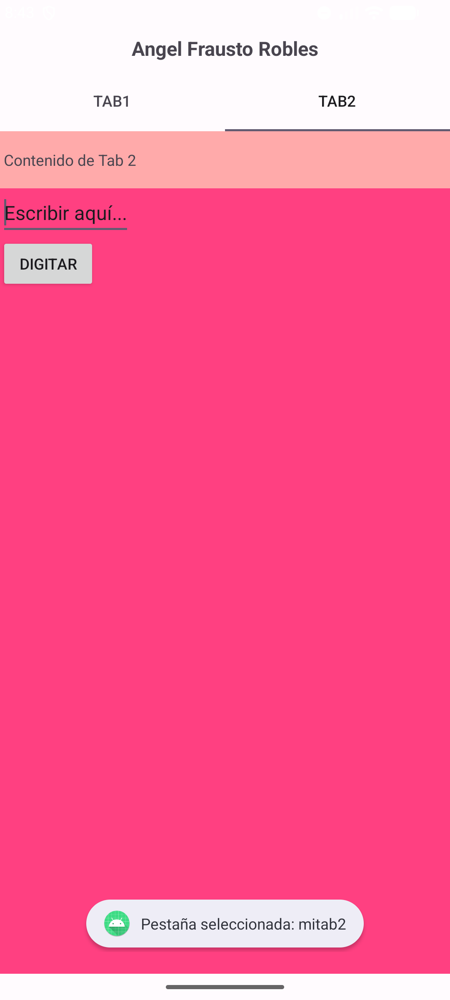
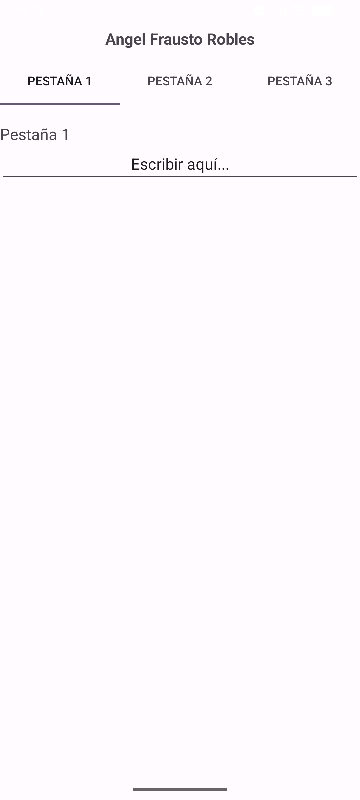
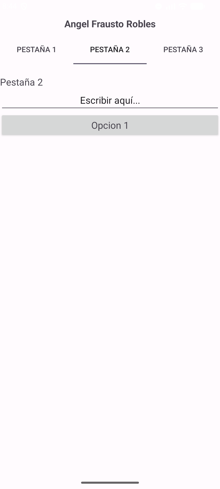
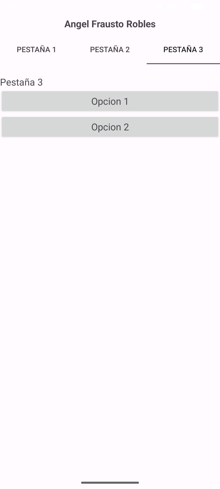
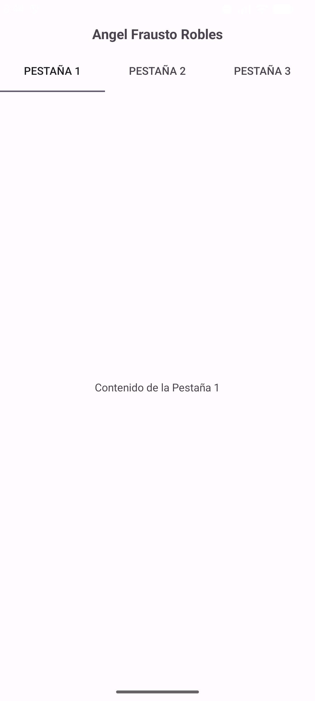
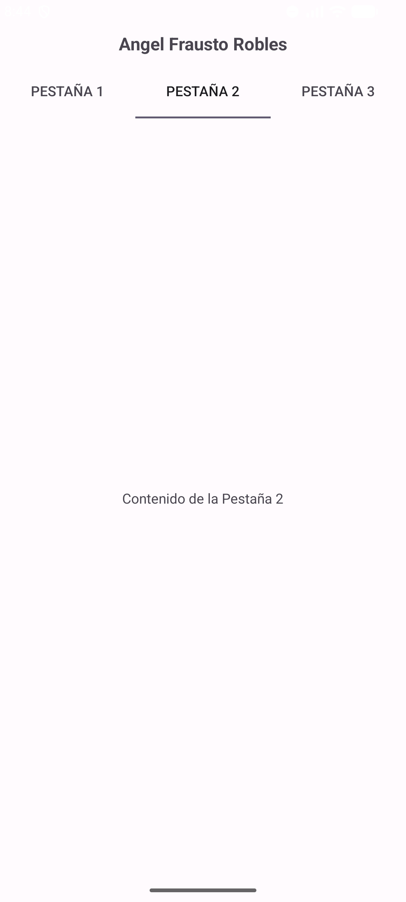
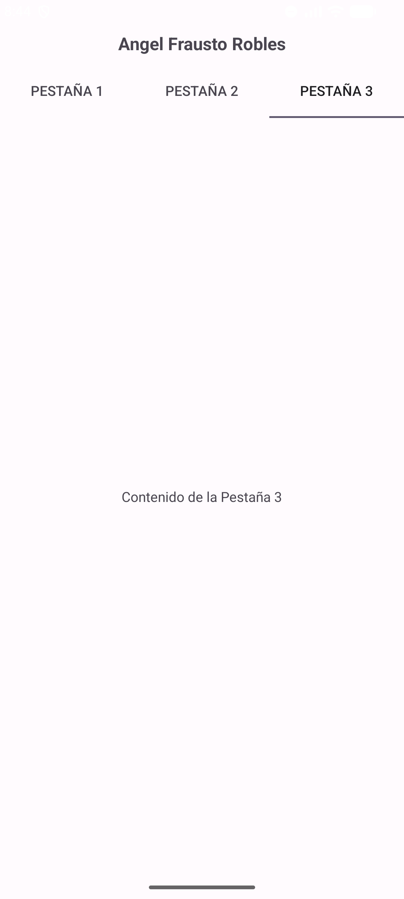

| Asignatura: | Desarrollo de Aplicaciones Móviles Nativas |
| Práctica: | Práctica 11 |
| Alumno: | Angel Frausto Robles |
| Grupo: | 7CM4 |
| Fecha: | 25 de septiembre de 2026 |
Las pestañas permiten organizar una interfaz en varias páginas que el usuario selecciona al tocar
las etiquetas de la parte superior. Se construyen con tres clases: TabHost
(el contenedor), TabHost.TabSpec (cada pestaña, con su etiqueta, su contenido
y un identificador) y TabWidget (la barra que muestra las etiquetas). Cuando el
contenido de cada pestaña es un fragmento, el contenedor es un FragmentTabHost.
Objetivos:
TabHost y TabSpec sin fragmentos (Ejemplo 1).FragmentTabHost y un fragmento por pestaña (Ejemplo 2).TabHost con tres pestañas en Kotlin (Ejemplo 3).
Un solo proyecto con tres actividades, una por ejemplo: MainActivity (Java),
MainActivityFragmentos (Java, con los fragmentos Tab1,
Tab2 y Tab3) y MainActivityKotlin
(Kotlin). El código sigue el material del profesor. El material del Ejemplo 2 usa las clases de la antigua
biblioteca de soporte (android.support.v4), y en el proyecto se usaron sus equivalentes
de AndroidX (androidx.fragment.app). Cada pantalla lleva mi nombre como encabezado
para identificar las capturas.
El diseño define un TabHost con un TabWidget y un
FrameLayout que contiene el contenido de cada pestaña. En
MainActivity, setup() prepara el contenedor y, por cada
pestaña, se crea un TabSpec con newTabSpec, se asigna su
contenido con setContent y su etiqueta con setIndicator, y se
agrega con addTab. Un OnTabChangeListener muestra en un
Toast la pestaña seleccionada.


El contenedor raíz es un FragmentTabHost, que contiene el
TabWidget y un FrameLayout donde se muestra el fragmento activo.
La actividad extiende FragmentActivity y agrega tres pestañas con
addTab, asociando a cada una su clase de fragmento. Cada fragmento infla su propio archivo
de diseño (tab1.xml, tab2.xml y tab3.xml).



La versión en Kotlin configura un TabHost con tres pestañas, y el contenido de cada una
(un TextView centrado) está definido en el mismo archivo de diseño.



[Conclusiones personales del alumno sobre TabHost, TabSpec, TabWidget y los fragmentos.]
developer.android.com/reference/android/widget/TabHostdeveloper.android.com/reference/androidx/fragment/app/FragmentTabHost